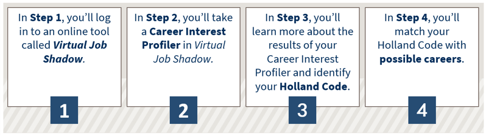

Choosing a Major to Study
Part 1: Exploring Your Career Interests
As you begin your academic pursuits at Davidson-Davie Community College, it's important to take a little time to explore your career interests. Knowing which careers are best aligned with your personal preferences and interests will help you determine which major or academic program you should pursue at Davidson-Davie. When your career interests match your academic goals, it's likely you'll be much more interested in what you're learning, and this will help you be more successful in reaching your goals!
This lesson will guide you through four steps that will help you learn more about your personal career preferences.

Click Next to go to Step 1.
Throughout this lesson, you'll use an online tool called Virtual Job Shadow. We'll begin your career exploration by visiting Virtual Job Shadow to register for your own account.
 Watch the Virtual Job Shadow: Getting Started video below to learn how to register and log in to your VirtualJobShadow account. Then scroll down to continue the lesson.
Watch the Virtual Job Shadow: Getting Started video below to learn how to register and log in to your VirtualJobShadow account. Then scroll down to continue the lesson.
Video transcript: Virtual Job Shadow: Geting Started (text file)
Video run time: 0:40
 After watching the video, you'll be ready to click the link below to go to Virtual Job Shadow and register your account:
After watching the video, you'll be ready to click the link below to go to Virtual Job Shadow and register your account:
Virtual Job Shadow (opens a new browser tab)

Next, we'll visit an online career interest profiler in Virtual Job Shadow to learn your three-letter Holland Code.
Click Next to go to Step 2.
Over the next few pages, you'll take an Interest Profiler in Virtual Job Shadow to learn about and reflect on your three-letter Holland Code. The Holland Code classifies jobs into six categories. Determining your Holland Code is a useful way to figure out which jobs might be a good match for you based on your personal interests.
 Watch the Completing Your Career Interest Profiler in Virtual Job Shadow video below to learn how to find and complete your Interest Profiler. Then scroll down to continue.
Watch the Completing Your Career Interest Profiler in Virtual Job Shadow video below to learn how to find and complete your Interest Profiler. Then scroll down to continue.
Video transcript: Completing Your Career Interest Profiler in Virtual Job Shadow (text file)
Video run time: 1:34
 Go to Virtual Job Shadow (opens a new browser tab).
Go to Virtual Job Shadow (opens a new browser tab).
Next, we'll take a closer look at your results and determine your three-letter Holland Code.
Click Next to go to Step 3.
Now that you've taken the Career Interest Profiler and have received your results, let's determine your three-letter Holland Code.
 Watch the Understanding the Results of Your Career Interest Profiler video below to learn what your Interest Profiler results mean and how to determine your Holland Code.
Watch the Understanding the Results of Your Career Interest Profiler video below to learn what your Interest Profiler results mean and how to determine your Holland Code.
Video transcript: Understanding the Results of Your Career Interest Profiler (text file)
Video run time: 1:33
Next, you'll learn how to match your Holland Code with possible careers.
Click Next to go to Step 4.
Your Holland Code can provide insightful information on which careers may be a good fit for you. We've created a chart that will help you match your Holland Code with careers or majors you can puruse at Davidson-Davie Community College.
 Save, downnload, and/or print the Understanding Your Holland Code handout (PDF). It contains six categories of jobs based on the Holland Code Types.
Save, downnload, and/or print the Understanding Your Holland Code handout (PDF). It contains six categories of jobs based on the Holland Code Types.
 Watch the Matching Your Holland Code to a Major video below to learn more about your Holland Code and careers or majors you can pursue at Davidson-Davie based on your Holland Code. Then scroll down to continue the Lesson.
Watch the Matching Your Holland Code to a Major video below to learn more about your Holland Code and careers or majors you can pursue at Davidson-Davie based on your Holland Code. Then scroll down to continue the Lesson.
Video transcript: Matching Your Holland Code to a Major (text file)
Video run time: 2:22
Complete the matching activity below to practice using the Understanding Your Holland Code Chart.
Alternate text version of Matching Characteristics and Holland Code Type Activity (PDF)
Next, you'll learn how to use Virtual Job Shadow to research careers you're interested in based on your Holland Code results.
Proceed to the next page of this lesson
Now that you've determined your Holland Code and possible career options, you can use VirtualJobShadow to begin exploring the careers that interest you.
 Watch the Using Virtual Job Shadow for Career Research video below to learn how to use VirtualJobShadow to search and learn about careers.
Watch the Using Virtual Job Shadow for Career Research video below to learn how to use VirtualJobShadow to search and learn about careers.
Video transcript: Using Virtual Job Shadow for Career Research (text file)
Video run time: 1:21
Feel free to explore a few career interests, and then proceed to the next page of this lesson.
You have reached the end of the Module 1 Part 1 Lesson.
Answer the question below to determine whether you're ready to move on in the New Student Orientation.
 Watch the Continuing to the Module 1 Part 1 Checkpoint video below as a reminder of how to locate the Checkpoint.
Watch the Continuing to the Module 1 Part 1 Checkpoint video below as a reminder of how to locate the Checkpoint.
Video transcript: Continuing to the Module 1 Part 1 Checkpoint (text file)
Video run time: 0:24